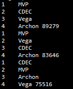
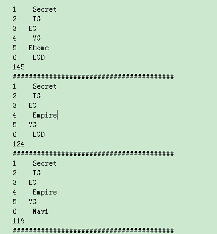

Ti5 外卡赛
前天一时兴起， 想用计算机模拟Ti5外卡赛和正赛来看看最后的结果如何，这样就能完成「 小金本 」的预测~ 现在记录一下一些有趣的东西。
外卡赛4只队伍CDEC, Vega, MVP 和 Archon, 问题的关键是如何模拟一场比赛的胜负。我最初的想法是查下有没有人研究过每支战队的MMR值与胜率之间的关系， 但是没有找到类似的结论。退而求其次， 我决定用MMR值作为一个基准，然后利用近3个月来战队之间相互战绩进行调整， 具体方案如下：
joindota 使用points值作为战队排名的依据， 同时点 开每支战队，可以查看近期的对战情况， 打开每场比赛还能看到双方交手胜负，比如Secret 的points 是34779， EG的points是33485， 那么Secret 对 EG的基础胜率就是$\frac{2}{3}$， EG对Secret的胜率则与之相反。
然后在joindota_match 这里记录了双方相互战绩为Secret为70%胜率。
那么我们最终的胜率定为 winrate["Secret"]["EG"] = alpha * 实际胜率 + (1 - alpha) * 基础胜率。
这里alpha由自己确定， 我设为0.65。 如果alpha> 0.5 则实际战绩比重更大， 反之基础胜率比重更大。
当然我具体做的时候并不精确， 其一我没有找到一个网站能够提供给我战队之间近3个月的相互战绩。 在dotamax我能查到各个战队的比赛情况， 但是我只能手工统计，这样太麻烦， 我就采用了joindata里面现成的数据， 但不知道这些交手战绩是什么时候的~。 其二是有些队伍之间比赛次数很少， 相互战绩并不能具体体现双方实力，但我还是按同样的公式进行加权平均。
对于外卡赛4只队伍，确实找不到相互战绩。。。所以直接使用points作为最终的胜率，当然这很不精确， 我就试试看有什么结果~4只战队的points如下：
points = {"CDEC" : 31462,
"Vega" : 30157,
"MVP" : 29431,
"Archon" : 23050 }
赛制是这样的， CDEC和Vega一组， MVP和Archon一组。 两组胜者在进行一轮比赛，胜者是外卡赛第一。两组败者进行一轮比赛， 败者是外开赛第四， 然后剩下两只队再争夺2，3名，所有比赛均为BO3。 由于我要完成小金本的预测，所以我统计不同的排名次序，看看出现最多的情况是什么，但是结果很出乎我的意料.............我进行了100万次循环， 出现前三多的排名情况竟然是这样的:

第一名竟然是points第三的MVP,并且出现较多的两种情况都是MVP居榜首， 我就瞬间凌乱了....正常来说最强的队出现第一的次数应该也是最多的吧，但是模拟的结果完全不是这样的。。。 一时想不通，我就把它放着了，直到今天我和室友说起这事的时候，他给了我一个很好的解释~ 首先我们看看具体模拟时候的胜率：
'MVP': {'MVP': -1, 'CDEC': 0.48332320627986797, 'Vega': 0.4939081694300866, 'Archon': 0.5607934300032392}
这是MVP对战各只队伍的胜率，可以看到按照我们的假设，其实MVP， CDEC， Vega之间实力差距并不大。 那么在BO3中获胜的胜率又有多少呢？
MVP vs CDEC : 0.483*0.483 + 0.483 * (1-0.483) *0.483 + (1-0.483) * 0.483 * 0.483 = 0.475
MVP vs Vega : 类似的0.491
MVP vs Archon: 0.591
CDEC vs Vega : 0.516
好，再次基础上考虑1000000次模拟，对于CDEC vs Vega的情况， CDEC 有 516000次进入决赛， Vega有484000次进入决赛。 而对于MVP vs Archon， MVP有591000次可能进入决赛。 这里我们发现MVP进入决赛的次数远远大于CDEC, Vega两队。 所以即使MVP在最后决胜的胜率偏低，有49.1% 和 47.5%，但是由于它进入决赛的次数比另外两队多，最终模拟出来的结果MVP得第一的次数就是最多的了...........很简单吧 好的，总结一下：
-
这里有违反直觉的地方存在， 胜率高的队伍在大量重复模拟的情况下得第一的次数竟然有可能比胜率偏低的队伍少， 原因是两只强队分入了死亡之组，而另一只稍弱的队伍稳稳地可以进入决赛， 在大量模拟的情况下，稍弱的队伍利用偏多的决赛次数弥补了胜率的不足。
-
我想用大量模拟的结果完成小金本名次预测这个方案本身不对， 因为在单次比赛中，显然按各队胜率从高往低依次为前四的概率显然是最高的，但是在大量统计的情况下却不是这样的。。。建议预测的话就按照实力强弱来排即可，最多也就24种情况，大家分分工总会对的
*其实我也对正赛做了简单的模拟， 模拟次数是500万次， 想知道前六排名， 而出现最多的情况是这些：

可以看到每种情况出现的次数是很少的。。总共好像有150多万种可能吧，所以从500w的量级来看这个数量也很少， 但是无一例外的是Secret都是第一。。。。当然这只是模拟的结果，实际情况千变万化~不过第一种情况有4只中国队前六也很不错啦， IG意外的比VG和EG还厉害。
-
运气真的是实力的一部分，还要看临场发挥啊、适应情况，不过这些都很难说清，期望中国队能取得好成绩了！
-
这是源代码 dota2_wild_card.py
Comments !